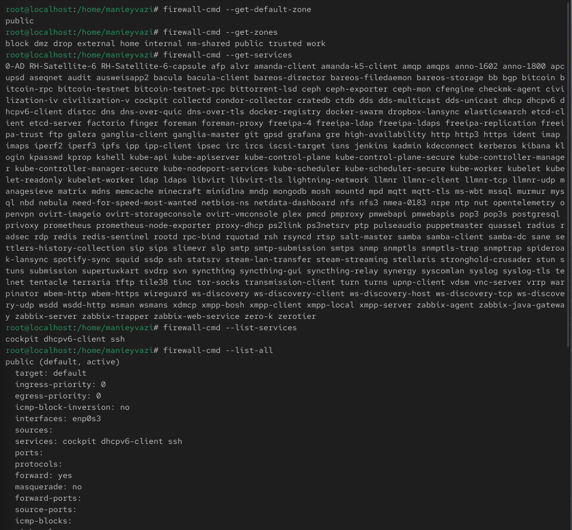
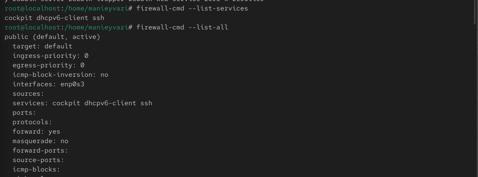
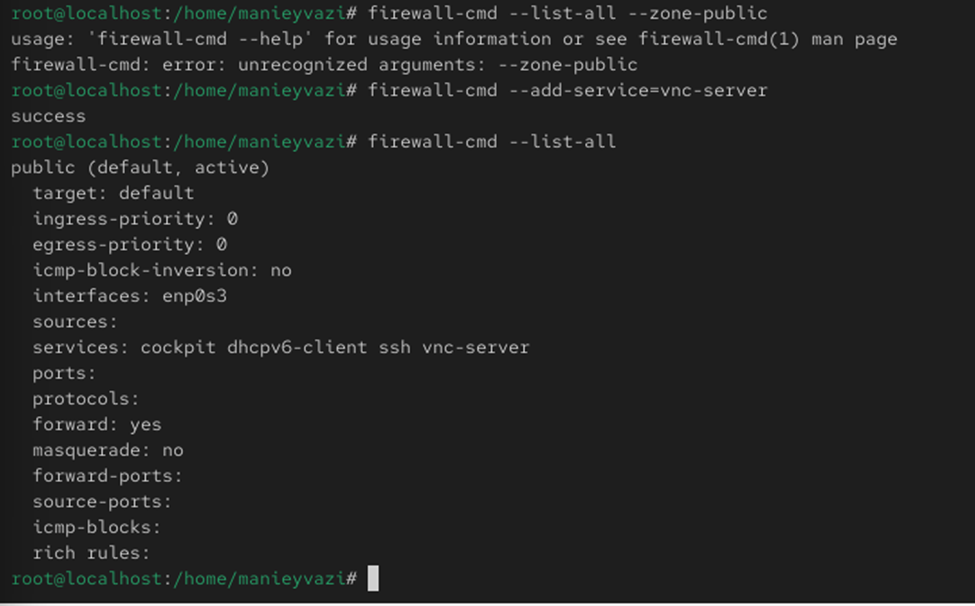
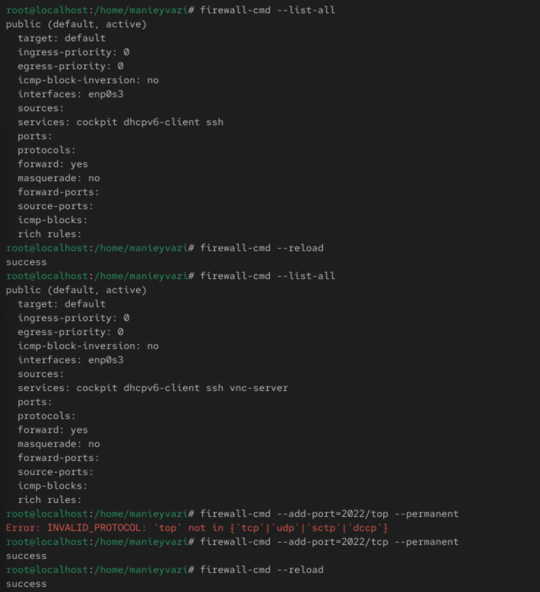
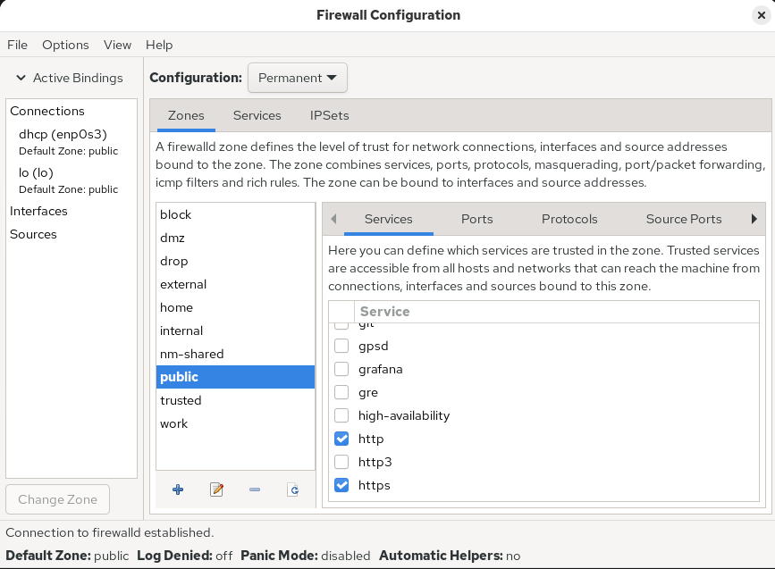
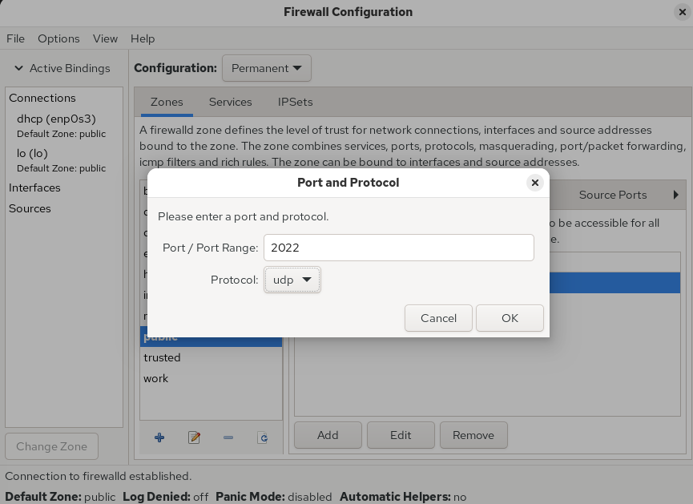
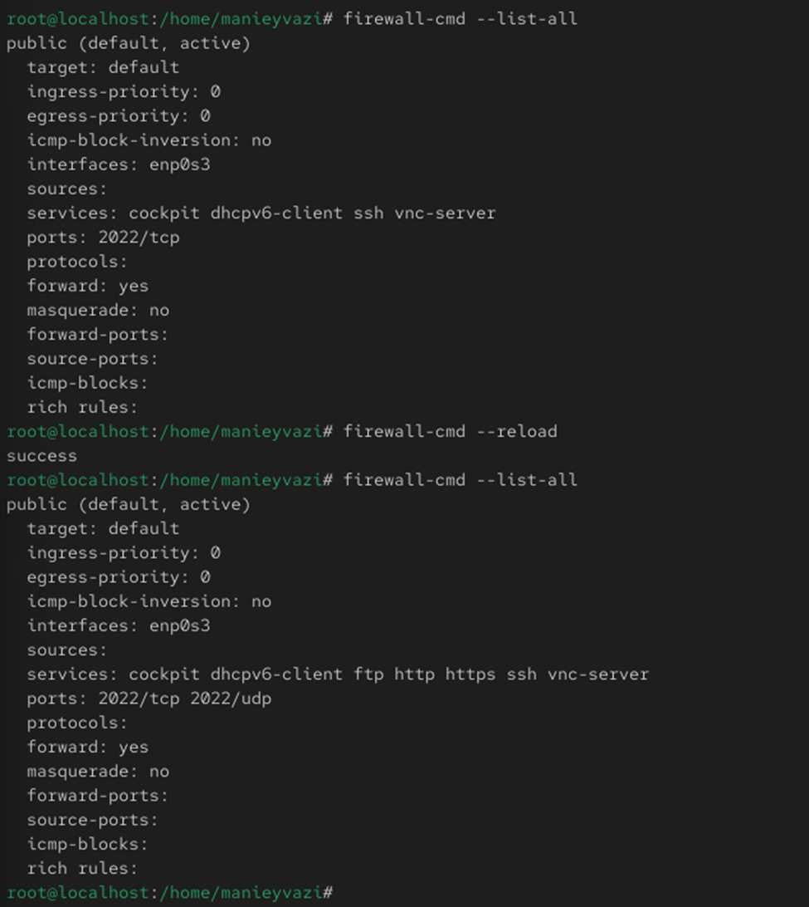

Цели и задачи работы
Цель лабораторной работы
Получить навыки работы с межсетевым экраном в Linux и научиться
управлять правилами фильтрации пакетов через:
- firewall-cmd (CLI)
- firewall-config (GUI)
Процесс выполнения
лабораторной работы
Определение конфигурации

Рис. 1 — Список зон и служб
Анализ активной зоны
-.

Рис. 2 — Параметры зоны public
Добавление сервиса
(временное изменение)
Рис. 3 — Добавление VNC и исчезновение после рестарта
Добавление
сервиса(постоянное изменение)
-.

Рис. 4 — Добавление VNC permanent
Добавление порта 2022/TCP
-.

Рис. 5 — Добавление порта 2022/tcp
Включение служб
-.

Рис. 6 — GUI firewall-config services
Добавление порта
-.

Рис. 7 — GUI firewall-config port
Проверка результата
-.

Рис. 8 — Список активных служб и портов
Добавление служб
Проверка работы системы.

Рис. 9 — Добавление служб через GUI
Проверка конфигурации

Рис. 10 — Итоговая конфигурация
Выводы по проделанной работе
Вывод
- Изучены инструменты управления брандмауэром:
firewall-cmd и firewall-config
- Освоены:
- просмотр зон и разрешённых служб
- добавление портов и сервисов
- различие между временной и постоянной конфигурацией
- На практике закреплено применение параметра
--permanent
и активация изменений через firewall-cmd --reload